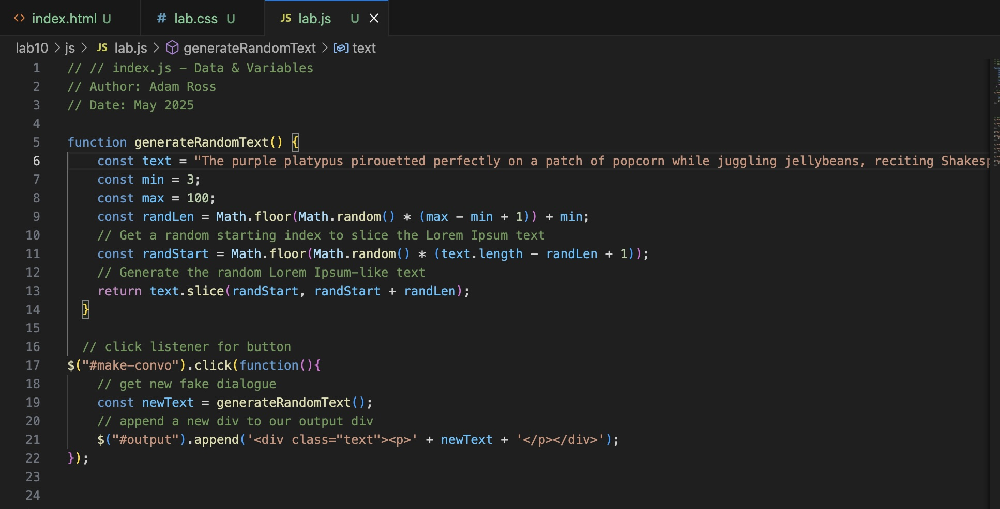
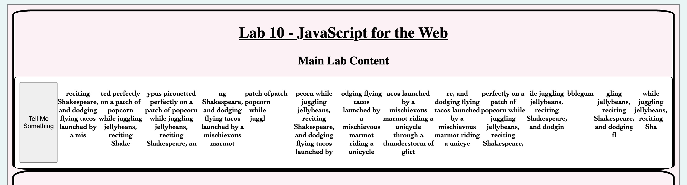
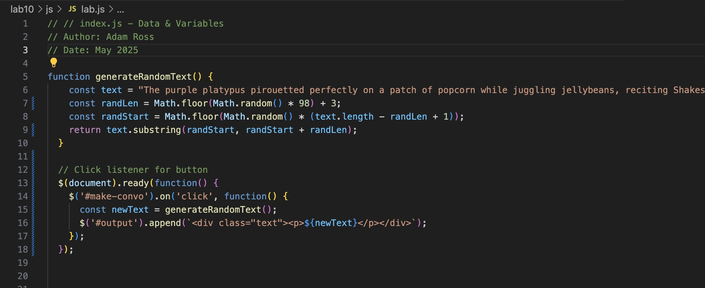
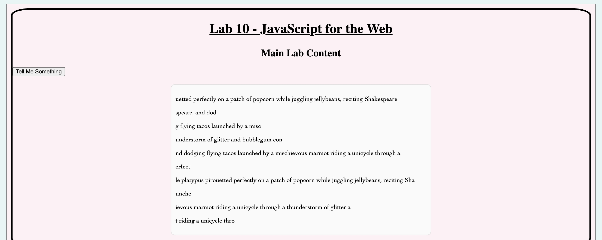

Here is my yucky old JavaScript code that barely worked and made an ugly output. While it was not necessarily bugged, it was extremely impractical.

This image shows just how strange and lame my old code was. In this version, nothing about the text was remotely discernable and it felt more like an art piece than a text generator.

Now, with this new code that ran the function more efficiently, and some additional CSS styling, I hoped that the newer version of the lab would look and act a lot more clean.

Pictured above, the new version of my Lab 10 site acts much smoother and provides much more readability if the example text had any meaning.
Challenge
The main challenge of this lab was to go back one of our old labs and fix or 'debug' the lab so that it worked better.
Problems
This lab did not have many problems because I was focused on simply making my code more efficient because I had not had very many real problems with my code in Labs.
Results
I successfully made my code from lab 10 much better and thus debugged the site for my 14th lab.